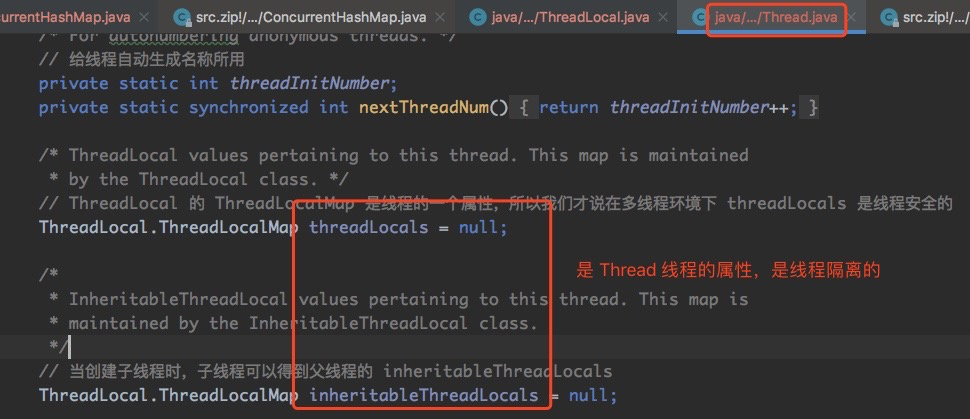
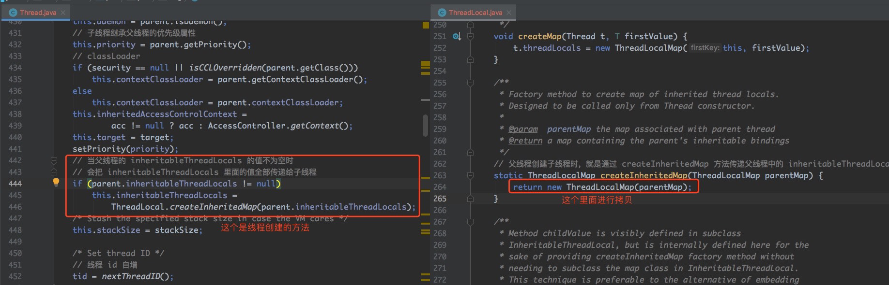

ThreadLocal 提供了一种方式，让在多线程环境下，每个线程都可以拥有自己独特的数据，并 且可以在整个线程执行过程中，从上而下的传递。
用法演示 1 2 3 4 5 6 7 8 9 10 11 12 13 14 15 16 17 18 19 20 21 22 23 24 25 26 27 28 29 30 31 32 public class ThreadLocalTest public static ThreadLocal<String> local = new ThreadLocal<>(); public static void main (String[] args) Thread threadOne = new Thread(new Runnable() { @Override public void run () local.set("thread-1 local value" ); try { Thread.sleep(5000 ); } catch (InterruptedException e) { e.printStackTrace(); } System.out.println(local.get()); } }); Thread threadTwo = new Thread(new Runnable() { @Override public void run () local.set("thread-2 local value" ); System.out.println(local.get()); local.remove(); System.out.println(local.get()); System.out.println("thread-2 remove 变量local 操作完毕。" ); } }); threadTwo. start(); threadOne. start(); } }
输出结果:
1 2 3 4 thread-2 local value null thread-2 remove 变量local 操作完毕。 thread-1 local value
可以看到,不同线程保存的变量 都是线程私有。
类结构 类范型 ThreadLocal 定义类时带有泛型，说明 ThreadLocal 可以储存任意格式的数据，源码如下：
1 public class ThreadLocal <T >
关键属性 ThreadLocal 有几个关键属性，我们一一看下：
1 2 3 4 5 6 private final int threadLocalHashCode = nextHashCode(); private static AtomicInteger nextHashCode = new AtomicInteger();
还有一个重要属性：ThreadLocalMap，当一个线程有多个 ThreadLocal 时，需要一个容器来 管理多个 ThreadLocal，ThreadLocalMap 的作用就是这个，管理线程中多个 ThreadLocal。
ThreadLocalMap ThreadLocalMap 本 身 就 是 一 个 简 单 的 Map 结 构 ， key 是 ThreadLocal ， value 是 ThreadLocal 保存的值，底层是数组的数据结构，源码如下：
1 2 3 4 5 6 7 8 9 10 11 12 13 14 15 16 17 18 19 20 21 22 static class ThreadLocalMap static class Entry extends WeakReference <ThreadLocal <?>> Object value; Entry(ThreadLocal<?> k, Object v) { super (k); value = v; } } } private static final int INITIAL_CAPACITY = 16 ;private Entry[] table;private int size = 0 ;private int threshold;
从源码中看到 ThreadLocalMap 其实就是一个简单的 Map 结构， 底层是数组， 有初始化大 小，也有扩容阈值大小，数组的元素是 Entry，Entry 的 key 就是 ThreadLocal 的引用，value 是 ThreadLocal 的值。
线程隔离 ThreadLocal 是线程安全的， 我们可以放心使用， 主要因为 ThreadLocalMap 是线程的属 性，我们看下线程 Thread 的源码，如下：

从 上 图 中 ， 我 们 可 以 看 到 ThreadLocals.ThreadLocalMap 和 InheritableThreadLocals.ThreadLocalMap 分 别 是 线 程 的 属 性 ， 所 以 每 个 线 程 的 ThreadLocals 都是隔离独享的。
父 线 程 在 创 建 子 线 程 的 情 况 下 ， 会 拷 贝 inheritableThreadLocals 的 值 ， 但 不 会 拷 贝 threadLocals 的值，源码如下：

从上图中我们可以看到，在线程创建时，会把父线程的 inheritableThreadLocals 属性值进行拷 贝。
set 方法 set 方法的主要作用是往当前 ThreadLocal 里面 set 值， 假如当前 ThreadLocal 的泛型是 Map，那么就是往当前 ThreadLocal 里面 set map，源码如下：
1 2 3 4 5 6 7 8 9 10 11 public void set (T value) Thread t = Thread.currentThread(); ThreadLocalMap map = getMap(t); if (map != null ) map.set(this , value); else createMap(t, value); }
代码逻辑比较清晰，我们在一起来看下 ThreadLocalMap.set 的源码，如下：
1 2 3 4 5 6 7 8 9 10 11 12 13 14 15 16 17 18 19 20 21 22 23 24 25 26 27 28 29 30 31 32 33 34 35 36 37 private void set (ThreadLocal<?> key, Object value) Entry[] tab = table; int len = tab.length; int i = key.threadLocalHashCode & (len-1 ); for (Entry e = tab[i]; e != null ; e = tab[i = nextIndex(i, len)]) { ThreadLocal<?> k = e.get(); if (k == key) { e.value = value; return ; } if (k == null ) { replaceStaleEntry(key, value, i); return ; } } tab[i] = new Entry(key, value); int sz = ++size; if (!cleanSomeSlots(i, sz) && sz >= threshold) rehash(); }
上面源码我们注意几点：
是通过递增的 AtomicInteger 作为 ThreadLocal 的 hashCode 的；
计算数组索引位置的公式是：hashCode 取模数组大小，由于 hashCode 不断自增，所 以不同的 hashCode 大概率上会计算到同一个数组的索引位置（但这个不用担心，在实际 项目中，ThreadLocal 都很少，基本上不会冲突）；
通过 hashCode 计算的索引位置 i 处如果已经有值了，会从 i 开始，通过 +1 不断的往后 寻找，直到找到索引位置为空的地方，把当前 ThreadLocal 作为 key 放进去。
好在日常工作中使用 ThreadLocal 时，常常只使用 1~2 个 ThreadLocal，通过 hash 计算出 重复的数组的概率并不是很大。
get方法 set 时的解决数组元素位置冲突的策略，也对 get 方法产生了影响，接着我们一起来看一下 get 方法。
1 2 3 4 5 6 7 8 9 10 11 12 13 14 15 16 17 18 public T get () Thread t = Thread.currentThread(); ThreadLocalMap map = getMap(t); if (map != null ) { ThreadLocalMap.Entry e = map.getEntry(this ); if (e != null ) { @SuppressWarnings ("unchecked" ) T result = (T)e.value; return result; } } return setInitialValue(); }
接着我们来看下 ThreadLocalMap 的 getEntry 方法，源码如下：
1 2 3 4 5 6 7 8 9 10 11 12 13 14 15 16 17 18 19 20 21 22 23 24 25 26 27 28 29 30 31 32 33 private Entry getEntry (ThreadLocal<?> key) int i = key.threadLocalHashCode & (table.length - 1 ); Entry e = table[i]; if (e != null && e.get() == key) return e; else return getEntryAfterMiss(key, i, e); } private Entry getEntryAfterMiss (ThreadLocal<?> key, int i, Entry e) Entry[] tab = table; int len = tab.length; while (e != null ) { ThreadLocal<?> k = e.get(); if (k == key) return e; if (k == null ) expungeStaleEntry(i); else i = nextIndex(i, len); e = tab[i]; } return null ; }
get 逻辑源码中注释已经写的很清楚了，我们就不重复说了。
扩容 ThreadLocalMap 中的 ThreadLocal 的个数超过阈值时， ThreadLocalMap 就要开始扩容 了，我们一起来看下扩容的逻辑：
1 2 3 4 5 6 7 8 9 10 11 12 13 14 15 16 17 18 19 20 21 22 23 24 25 26 27 28 29 30 31 32 33 34 private void resize () Entry[] oldTab = table; int oldLen = oldTab.length; int newLen = oldLen * 2 ; Entry[] newTab = new Entry[newLen]; int count = 0 ; for (int j = 0 ; j < oldLen; ++j) { Entry e = oldTab[j]; if (e != null ) { ThreadLocal<?> k = e.get(); if (k == null ) { e.value = null ; } else { int h = k.threadLocalHashCode & (newLen - 1 ); while (newTab[h] != null ) h = nextIndex(h, newLen); newTab[h] = e; count++; } } } setThreshold(newLen); size = count; table = newTab; }
源码注解也比较清晰，我们注意两点：
扩容后数组大小是原来数组的两倍；
扩容时是绝对没有线程安全问题的，因为 ThreadLocalMap 是线程的一个属性，一个线 程同一时刻只能对 ThreadLocalMap 进行操作，因为同一个线程执行业务逻辑必然是串 行的，那么操作 ThreadLocalMap 必然也是串行的。

This is copyright.